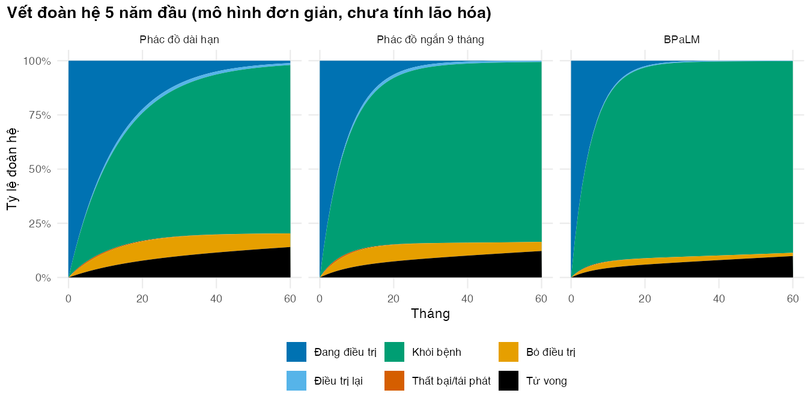

# Vietnamese text in figures needs a UTF-8 locale (Rscript may start in the "C" locale)
if (!isTRUE(l10n_info()[["UTF-8"]])) invisible(Sys.setlocale("LC_CTYPE", "en_US.UTF-8"))
source("../_shared/R/helpers.R")
source("../_shared/R/vn_data.R") # course-wide values: threshold, discount rate, prices
source("code/model.R")
library(ggplot2)
p <- m02_params() # params/mdrtb.csv + shared values
ptab <- attr(p, "table")
inp <- prepare_inputs(p)
ctx_tab <- attr(vn_context(), "table") # the discount-rate range lives in the shared tableBài 3: Vết đoàn hệ, giá trị gắn với trạng thái và chiết khấu
Chạy mô hình Markov đoàn hệ bằng base R và tính chi phí, QALY, năm sống
Vì sao bạn nên quan tâm?
Một tháng phác đồ dài hạn tốn 1,242,064 VNĐ cho thuốc và theo dõi, bằng 31 bát phở ở Hà Nội (Nhadautu.vn 2025). Nhân với 18 tháng thì dễ; khó là biết mỗi tháng còn bao nhiêu người thật sự đang uống thuốc, bao nhiêu người đã khỏi, đã bỏ dở hay đang điều trị lại, và một năm sống khỏe ở năm thứ 20 đáng bao nhiêu so với hôm nay. Ngưỡng 125,500,000 VNĐ cho mỗi QALY mà khóa học dùng chỉ có nghĩa khi QALY và chi phí được cộng đúng cách. Bài này dạy cách cộng đó, qua vết đoàn hệ (Markov trace), giá trị gắn với từng trạng thái, chiết khấu và hiệu chỉnh trong chu kỳ, để bạn tính được một phác đồ đắt hơn mỗi tháng nhưng ngắn hơn có thật sự đáng tiền hay không.
Mục tiêu học tập
Sau bài này, bạn có thể:
- Chạy vết đoàn hệ (Markov trace) bằng vòng lặp nhân ma trận trong base R và kiểm tra nó.
- Gắn chi phí, thỏa dụng và năm sống cho từng trạng thái, rồi tính chi phí, năm sống điều chỉnh theo chất lượng (QALY) và năm sống kỳ vọng ở mỗi chu kỳ.
- Chiết khấu (discounting) chi phí và kết quả khi chu kỳ dài một tháng.
- Áp dụng và so sánh các cách hiệu chỉnh trong chu kỳ (within-cycle correction).
Ý chính
- Vết đoàn hệ là ma trận \((n+1) \times K\): hàng \(t\) là phân bố đoàn hệ sau \(t\) chu kỳ.
- Ba kiểm tra tối thiểu: mỗi hàng cộng bằng 1, không có số âm, tỷ lệ tử vong không bao giờ giảm.
- Giá trị gắn với trạng thái (state reward) là chi phí, thỏa dụng, năm sống của một chu kỳ ở trạng thái đó. Giá trị kỳ vọng mỗi chu kỳ là vết nhân vectơ giá trị.
- Với chu kỳ tháng, chi phí nhập theo tháng; thỏa dụng và năm sống tính theo năm nên phải chia 12.
- Hệ số chiết khấu \(d_t = (1+r)^{-t/12}\): tỷ lệ năm, thời gian đo bằng năm.
- Với giá trị tích lũy liên tục (năm sống, QALY), đếm ở đầu chu kỳ thì thừa, đếm ở cuối thì thiếu. Quy tắc hình thang (trapezoid), tương đương hiệu chỉnh nửa chu kỳ, lấy trung bình hai cách; quy tắc Simpson chính xác hơn.
- Chi phí phát sinh tại một thời điểm, như thuốc cấp đầu mỗi tháng, thì đếm đủ ở đầu chu kỳ; không áp hiệu chỉnh trong chu kỳ cho nó.
- Mô hình trong bài này chưa có lão hóa: dùng để học cơ chế, không dùng để báo cáo.
Nội dung
Vết đoàn hệ
Bắt đầu với cả đoàn hệ ở trạng thái Đang điều trị, \(s_0 = (1, 0, 0, 0, 0, 0)\), rồi lặp:
\[ s_t = s_{t-1} P, \qquad t = 1, \dots, n . \]
Xếp chồng các vectơ \(s_0, \dots, s_n\) thành một ma trận là được vết đoàn hệ. Mô hình cần 660 phép nhân vectơ–ma trận; một vòng lặp for trong base R chạy xong trong tích tắc. Bài này dùng một ma trận \(P\) cố định ở tuổi bắt đầu 45, như Bài 1.
Giá trị gắn với trạng thái
Mỗi trạng thái có một chi phí mỗi tháng và một thỏa dụng (utility) mỗi năm. Mọi chi phí tính theo giá năm 2025, quan điểm hệ thống y tế:
- Thuốc: giá cả đợt chia cho số tháng. Phác đồ dài hạn 676,964 VNĐ/tháng (cận dưới của giá cả đợt cho người lớn), phác đồ ngắn 857,303 VNĐ/tháng (McConnell 2025), BPaLM 1,181,913 VNĐ/tháng sau đợt giảm giá năm 2025 của Global Drug Facility (ITPC-EECA 2025). Đây là giá mua quốc tế, chưa gồm phân phối trong nước.
- Theo dõi: mỗi tháng điều trị một lượt khám, soi đờm, nuôi cấy môi trường lỏng, công thức máu và chức năng gan–thận, tổng 565,100 VNĐ theo giá dịch vụ BHYT tại một bệnh viện hạng đặc biệt (Bộ Y tế 2024). Với phác đồ dài, WHO khuyến cáo theo dõi đáp ứng bằng nuôi cấy đờm kèm soi đờm, tốt nhất là hằng tháng (World Health Organization 2020); mô hình dùng cùng lịch này cho cả ba phác đồ. Chi phí nhân lực cho DOT chưa được tính.
- Điều trị lại: thuốc của phác đồ dài hạn cộng cùng gói theo dõi.
- Thất bại: một lượt khám mỗi tháng, 50,600 VNĐ (giả định số lượt khám). Bỏ điều trị (lost to follow-up) và Khỏi bệnh: không có chi phí y tế (giả định).
Thỏa dụng khi mắc lao hoặc đang điều trị là 0.83, sau điều trị là 0.90, đo bằng EQ-5D-5L với bộ giá trị Việt Nam (Vo và c.s. 2025). Nghiên cứu này chỉ gồm người lớn mắc lao phổi nhạy thuốc; dùng cho lao kháng thuốc có thể đánh giá thỏa dụng cao hơn thực tế, nhất là trong 18 tháng của phác đồ dài hạn.
Với vectơ chi phí điều trị \(c^{\text{đt}}\) (thuốc và theo dõi, trả đầu mỗi tháng, gồm cả điều trị lại), vectơ chi phí khác \(c\), vectơ thỏa dụng \(u\), trọng số chu kỳ \(w_t\) và hệ số chiết khấu \(d_t\):
\[ C = \sum_{t=0}^{n-1} d_t\, (s_t \cdot c^{\text{đt}}) + \sum_{t=0}^{n} w_t\, d_t\, (s_t \cdot c), \qquad Q = \sum_{t=0}^{n} w_t\, d_t\, \frac{s_t \cdot u}{12}, \qquad LY = \sum_{t=0}^{n} w_t\, d_t\, \frac{s_t \cdot \mathbf{1}_{\text{còn sống}}}{12}. \]
Chiết khấu
\[ d_t = \frac{1}{(1+r)^{t/12}} . \]
Khóa học dùng \(r =\) 3%/năm cho cả chi phí và kết quả, theo một số đánh giá kinh tế gần đây tại Việt Nam (Ong và c.s. 2026), trong đó có đánh giá về điều trị dự phòng bằng levofloxacin cho người tiếp xúc hộ gia đình với lao đa kháng (Hasan và c.s. 2025). Đây là tiền lệ, chưa phải chuẩn mực quốc gia; xem M01 và khung tham chiếu iDSI (Wilkinson và c.s. 2016).
Hiệu chỉnh trong chu kỳ
Vết đoàn hệ chỉ cho biết phân bố ở ranh giới các chu kỳ, còn người bệnh chuyển trạng thái rải rác trong chu kỳ. Tổng giá trị là một tích phân, và ta xấp xỉ nó bằng trọng số \(w_t\) trên các hàng \(t = 0, \dots, n\):
| Cách | Trọng số \(w_0, w_1, \dots, w_{n-1}, w_n\) | Ý nghĩa |
|---|---|---|
| Đầu chu kỳ | \(1, 1, \dots, 1, 0\) | thừa: coi mọi chuyển xảy ra ở cuối chu kỳ |
| Cuối chu kỳ | \(0, 1, \dots, 1, 1\) | thiếu: coi mọi chuyển xảy ra ở đầu chu kỳ |
| Hình thang | \(\tfrac12, 1, \dots, 1, \tfrac12\) | trung bình hai cách trên |
| Simpson 1/3 | \(\tfrac13, \tfrac43, \tfrac23, \dots, \tfrac43, \tfrac13\) | chính xác hơn; cần \(n\) chẵn |
Quy tắc hình thang cho kết quả như hiệu chỉnh nửa chu kỳ cổ điển (Elbasha và Chhatwal 2016); Naimark và cộng sự giải thích trực quan vì sao cần hiệu chỉnh này (Naimark, Bott, và Krahn 2008). Barendregt đề nghị bỏ hẳn cách “cộng thêm nửa chu kỳ” và dùng phương pháp bảng sống, cũng chính là trung bình đầu–cuối (Barendregt 2009). Elbasha và Chhatwal chỉ ra các cách này đều là quy tắc tích phân số; Simpson hội tụ nhanh nhất, chu kỳ ngắn làm mọi cách đều chính xác hơn, và có tình huống hiệu chỉnh nửa chu kỳ gây hại nhiều hơn lợi (Elbasha và Chhatwal 2016).
Khi nào không hiệu chỉnh. Mọi quy tắc trên giả định người bệnh rời trạng thái rải rác trong chu kỳ và giá trị tích lũy liên tục. Hai trường hợp không thỏa. Thứ nhất, chi phí phát sinh tại một thời điểm: thuốc cấp đầu mỗi tháng thì người bệnh nào ở trạng thái điều trị lúc đầu tháng cũng tốn đủ một tháng thuốc, nên đếm ở đầu chu kỳ. Thứ hai, lối ra xác định: trong mô hình đường hầm (Bài 4), mọi người rời tháng điều trị cuối đúng ở ranh giới chu kỳ; quy tắc hình thang lấy trung bình hai ranh giới của tháng đó (đầu tháng còn đủ người, cuối tháng không còn ai), nên chỉ tính nửa tháng cuối. Ở những chỗ “nhảy bậc” như vậy, Simpson cũng mất lợi thế. Mô hình của module vì vậy dùng hai quy ước: chi phí điều trị đếm ở đầu chu kỳ; năm sống, QALY, năm sống với bệnh tật và chi phí sau điều trị dùng hình thang.
Thực hành
Nạp hàm và tham số. Kiểm tra: không có lỗi.
Chạy vết đoàn hệ bằng một vòng lặp, mỗi bước là một phép nhân vectơ hàng với ma trận. Kiểm tra: ma trận vết có 661 hàng (chu kỳ 0 đến 660) và sáu cột.
# Time-homogeneous model: ONE matrix (age fixed at the start), 6 states, monthly cycles
P <- build_P_simple(inp, "long", age = p$age_start)
n_cycles <- inp$n_cycles
trace <- matrix(0, nrow = n_cycles + 1, ncol = ncol(P),
dimnames = list(0:n_cycles, colnames(P)))
trace[1, ] <- initial_state(colnames(P))
for (t in 1:n_cycles) {
trace[t + 1, ] <- trace[t, ] %*% P
}
dim(trace)[1] 661 6round(trace[c("0", "1", "6", "12", "24", "120"), ], 4) OnTx ReTx Cured Failed LTFU Dead
0 1.0000 0.0000 0.0000 0.0000 0.0000 0.0000
1 0.9278 0.0000 0.0535 0.0027 0.0100 0.0059
6 0.6380 0.0069 0.2697 0.0062 0.0479 0.0313
12 0.4071 0.0141 0.4456 0.0047 0.0739 0.0546
24 0.1657 0.0172 0.6376 0.0021 0.0905 0.0869
120 0.0001 0.0027 0.7768 0.0000 0.0224 0.1980Chạy ba kiểm tra tối thiểu và so sánh vòng lặp viết tay với hàm run_trace() trong model.R. Kiểm tra: không có lỗi nào được báo.
check_trace(trace) # rows sum to 1, nothing negative
stopifnot(all(diff(trace[, "Dead"]) >= 0)) # the dead never come back
stopifnot(isTRUE(all.equal(trace, run_trace(P, initial_state(colnames(P)), n_cycles))))
alive_10y <- 1 - trace["120", "Dead"]
alive_10y[1] 0.8020377Sau 10 năm, mô hình đơn giản cho 80.2% đoàn hệ còn sống. Hình vẽ vết của ba phác đồ trong 5 năm đầu. Kiểm tra: mỗi cột dọc đều lấp đầy 100%; dải “Điều trị lại” mỏng nhất ở BPaLM.
state_vi <- c(OnTx = "Đang điều trị", ReTx = "Điều trị lại", Cured = "Khỏi bệnh",
Failed = "Thất bại/tái phát", LTFU = "Bỏ điều trị", Dead = "Tử vong")
plot_df <- NULL
for (g in REGIMENS) {
P_g <- build_P_simple(inp, g, age = p$age_start)
tr_g <- run_trace(P_g, initial_state(colnames(P_g)), n_cycles = 60)
plot_df <- rbind(plot_df, data.frame(
month = rep(0:60, times = ncol(tr_g)),
state = factor(rep(state_vi[colnames(tr_g)], each = 61), levels = state_vi),
share = as.vector(tr_g),
regimen = factor(REGIMEN_LABELS[[g]], levels = REGIMEN_LABELS)
))
}
fig_trace <- ggplot(plot_df, aes(month, share, fill = state)) +
geom_area() +
facet_wrap(~regimen) +
scale_fill_manual(values = pal_course[c(1, 5, 3, 2, 4, 8)], name = NULL) +
scale_y_continuous(labels = function(x) paste0(100 * x, "%")) +
labs(x = "Tháng", y = "Tỷ lệ đoàn hệ",
title = "Vết đoàn hệ 5 năm đầu (mô hình đơn giản, chưa tính lão hóa)") +
theme_course()
save_fig(fig_trace, "l03-trace.png", width = 9, height = 4.5)
# Average share in retreatment over the first 5 years: smallest with BPaLM
retx_share <- tapply(plot_df$share[plot_df$state == state_vi[["ReTx"]]],
plot_df$regimen[plot_df$state == state_vi[["ReTx"]]], mean)
round(retx_share, 4) Phác đồ dài hạn Phác đồ ngắn 9 tháng BPaLM
0.0123 0.0099 0.0037 stopifnot(names(which.min(retx_share)) == REGIMEN_LABELS[["bpalm"]])
Lấy vectơ giá trị cho từng trạng thái và nhân với vết để có chi phí, QALY và năm sống kỳ vọng ở mỗi chu kỳ. Chi phí điều trị (lần đầu và điều trị lại) được tách riêng vì nó trả đầu tháng. Kiểm tra: chi phí không âm và QALY không vượt quá năm sống.
# State rewards: one value per state (cost per month; utility per year)
r_long <- state_rewards(p, "long", colnames(P))
rbind(cost_vnd_month = r_long$cost, utility_year = r_long$utility) OnTx ReTx Cured Failed LTFU Dead
cost_vnd_month 1242064.44 1242064.44 0.0 50600.00 0.00 0
utility_year 0.83 0.83 0.9 0.83 0.83 0# Expected value per cycle = trace (cycles x states) %*% reward vector (states).
# Treatment costs (drugs + monitoring, first-line OnTx and retreatment ReTx) are kept
# apart: they are paid at the start of each month.
on_tx <- colnames(P) %in% c("OnTx", "ReTx")
cost_tx_cycle <- as.vector(trace[, on_tx, drop = FALSE] %*% r_long$cost[on_tx])
cost_post_cycle <- as.vector(trace[, !on_tx, drop = FALSE] %*% r_long$cost[!on_tx])
qaly_cycle <- as.vector(trace %*% r_long$utility) / 12
ly_cycle <- as.vector(trace %*% r_long$alive) / 12
round(head(cbind(cost_tx_cycle, cost_post_cycle, qaly_cycle, ly_cycle), 3), 4) cost_tx_cycle cost_post_cycle qaly_cycle ly_cycle
[1,] 1242064 0.0000 0.0692 0.0833
[2,] 1152436 137.4289 0.0691 0.0828
[3,] 1070300 223.2563 0.0690 0.0824stopifnot(all(cost_tx_cycle >= 0), all(cost_post_cycle >= 0), all(qaly_cycle <= ly_cycle + 1e-12))Ở chu kỳ 0, cả đoàn hệ đang điều trị nên chi phí điều trị là 1,242,064 VNĐ, đúng bằng tiền thuốc cộng tiền theo dõi một tháng.
Chiết khấu theo thời gian tính bằng năm, rồi cộng dồn: chi phí điều trị với trọng số đầu chu kỳ, các giá trị khác với trọng số hình thang. Kiểm tra: tổng có chiết khấu nhỏ hơn tổng không chiết khấu (stopifnot).
years <- (0:n_cycles) / 12
disc <- discount_weights(years, p$disc_rate)
w <- cycle_weights(n_cycles, "trapezoid") # values that accrue during the cycle
w_start <- cycle_weights(n_cycles, "start") # values paid at the start of the cycle
totals_l03 <- c(
cost_undisc = sum(w_start * cost_tx_cycle) + sum(w * cost_post_cycle),
cost_disc = sum(w_start * disc * cost_tx_cycle) + sum(w * disc * cost_post_cycle),
qaly_undisc = sum(w * qaly_cycle), qaly_disc = sum(w * disc * qaly_cycle),
ly_undisc = sum(w * ly_cycle), ly_disc = sum(w * disc * ly_cycle)
)
round(totals_l03, 3) cost_undisc cost_disc qaly_undisc qaly_disc ly_undisc ly_disc
18709189.116 17979284.646 33.008 17.681 36.823 19.781 stopifnot(all(totals_l03[c("cost_disc", "qaly_disc", "ly_disc")] <
totals_l03[c("cost_undisc", "qaly_undisc", "ly_undisc")]))
disc_10y <- disc[years == 10]
disc_10y[1] 0.7440939Hệ số chiết khấu ở năm thứ 10 là 0.744: một QALY ở năm thứ 10 chỉ được tính bằng 0.744 QALY hôm nay. Chiết khấu kéo tổng QALY từ 33.01 xuống 17.68.
So sánh bốn cách hiệu chỉnh trong chu kỳ cho năm sống và QALY trên cùng một vết. Kiểm tra: kết quả “đầu” lớn nhất, “cuối” nhỏ nhất, hình thang và Simpson nằm giữa.
# Within-cycle corrections for values that accrue continuously (life-years, QALYs)
methods <- c("start", "end", "trapezoid", "simpson")
wcc_tab <- data.frame(method = methods, ly = NA, qaly = NA)
for (i in seq_along(methods)) {
w_i <- cycle_weights(n_cycles, methods[i])
wcc_tab$ly[i] <- sum(w_i * disc * ly_cycle)
wcc_tab$qaly[i] <- sum(w_i * disc * qaly_cycle)
}
print(wcc_tab, digits = 6) method ly qaly
1 start 19.8192 17.7122
2 end 19.7437 17.6501
3 trapezoid 19.7814 17.6812
4 simpson 19.7814 17.6811wcc_gap_ly <- wcc_tab$ly[wcc_tab$method == "start"] - wcc_tab$ly[wcc_tab$method == "end"]
lys_w <- setNames(wcc_tab$ly, wcc_tab$method)
wcc_trap_simpson <- abs(lys_w[["trapezoid"]] - lys_w[["simpson"]])
# Claims in the lesson: counting at the start is the largest and at the end the smallest, the
# trapezoid and Simpson rules lie between them and agree far better than start and end do,
# and the start-end gap is about one cycle (1/12 year).
stopifnot(lys_w[["start"]] > lys_w[["trapezoid"]], lys_w[["trapezoid"]] > lys_w[["end"]],
lys_w[["simpson"]] < lys_w[["start"]], lys_w[["simpson"]] > lys_w[["end"]],
wcc_trap_simpson < 0.1 * wcc_gap_ly, abs(wcc_gap_ly - 1 / 12) < 0.02)Đếm đầu và đếm cuối chênh nhau 0.075 năm sống, xấp xỉ một chu kỳ (1/12 = 0.083 năm). Hình thang và Simpson chỉ khác nhau 0.0001 năm sống, vì chu kỳ tháng đã ngắn. Mô hình trong module dùng hình thang cho các giá trị này.
Cuối cùng, gói các bước trên vào evaluate_regimen() và chạy cho cả ba phác đồ bằng run_cea(). Kiểm tra: stopifnot xác nhận hàm cho đúng con số đã tính tay.
# The same steps, packaged in evaluate_regimen(): the numbers must match exactly
ev_long <- evaluate_regimen(p, "long", structure = "simple", ageing = FALSE, events = FALSE)
stopifnot(abs(ev_long$totals[["cost"]] - totals_l03[["cost_disc"]]) < 1e-6,
abs(ev_long$totals[["qaly"]] - totals_l03[["qaly_disc"]]) < 1e-10)
res_l03 <- run_cea(p, structure = "simple", ageing = FALSE, events = FALSE)
res_l03$cost_million <- res_l03$cost / 1e6
round(res_l03[, c("cost_million", "qaly", "ly")], 3) cost_million qaly ly
long 17.979 17.681 19.781
short 11.871 18.149 20.251
bpalm 10.639 18.723 20.852Kết quả tạm thời: phác đồ dài hạn 18.0 triệu VNĐ và 17.68 QALY; phác đồ ngắn 11.9 triệu VNĐ và 18.15 QALY; BPaLM 10.6 triệu VNĐ và 18.72 QALY. Đừng báo cáo các số này: mô hình chưa có lão hóa (Bài 4) và chưa có biến cố bất lợi (Bài 5).
Mẹo thực hành
- Lưu cả vết đoàn hệ, không chỉ tổng cuối: vết là nguyên liệu cho mọi kiểm tra, cho các kết quả dịch tễ và cho hiệu chuẩn mô hình (M08).
- Đặt tên hàng của vết là số chu kỳ để viết
trace["120", ]thay vìtrace[121, ]. - Tính giá trị kỳ vọng bằng phép nhân ma trận
trace %*% reward, không lặp qua từng trạng thái. - Viết từng bước bằng tay trước, rồi gói vào hàm; giữ phép so sánh “tay = hàm” như một kiểm tra hồi quy.
Lỗi thường gặp
- Quên chia thỏa dụng cho 12 khi chu kỳ là tháng: QALY gấp 12 lần. Dấu hiệu: QALY lớn hơn số năm còn sống.
- Chiết khấu theo chỉ số chu kỳ: viết
(1 + r)^tvới \(t\) là tháng thì chiết khấu quá mức. Thời gian phải đổi ra năm. - Hiệu chỉnh sai chỗ: đã dùng trọng số hình thang mà vẫn trừ thêm nửa chu kỳ; hoặc áp hình thang cho chi phí trả đầu chu kỳ như tiền thuốc cấp hằng tháng, làm mất khoảng nửa tháng thuốc của mỗi đợt điều trị (Bài 4).
- Gắn chi phí cho trạng thái Tử vong: chi phí lúc tử vong gắn với dòng chuyển vào Tử vong, không gắn với trạng thái (Bài 5).
Bài tập
- (Dễ) Tính QALY có chiết khấu của phác đồ dài hạn với tỷ lệ chiết khấu 0%, 3% và 5%/năm. Tỷ lệ chiết khấu ảnh hưởng thế nào?
Lời giải
# Exercise 1: discounted QALYs (long regimen) at 0%, the base rate and the high value
rates <- c(0, p$disc_rate, ctx_tab$high[ctx_tab$name == "disc_rate"])
qaly_by_rate <- sapply(rates, function(r) sum(w * discount_weights(years, r) * qaly_cycle))
cost_by_rate <- sapply(rates, function(r) {
d_r <- discount_weights(years, r)
sum(w_start * d_r * cost_tx_cycle) + sum(w * d_r * cost_post_cycle)
})
round(rbind(qaly = qaly_by_rate, cost_million = cost_by_rate / 1e6), 3) [,1] [,2] [,3]
qaly 33.008 17.681 12.972
cost_million 18.709 17.979 17.546# Claims in the lesson: QALYs fall as the rate rises, and costs (paid early) fall proportionally less
stopifnot(all(diff(qaly_by_rate) < 0),
1 - cost_by_rate[3] / cost_by_rate[1] < 1 - qaly_by_rate[3] / qaly_by_rate[1])QALY giảm từ 33.0 xuống 13.0 khi tỷ lệ chiết khấu tăng từ 0% lên 5%, vì phần lớn QALY đến từ những năm xa sau khi khỏi bệnh. Chi phí điều trị xảy ra sớm nên giảm ít hơn (6% so với 61% của QALY); vì vậy chiết khấu thường bất lợi cho can thiệp có lợi ích muộn.
- (Vừa) Từ vết, tính tỷ lệ còn sống sau 10 và 20 năm, và tuổi thọ còn lại không chiết khấu. So với lời giải bài tập 3 của Bài 1, vì sao khác?
Lời giải
# Exercise 2: share alive at 10 and 20 years, and undiscounted life expectancy (years)
life_exp <- sum(w * ly_cycle)
# Lesson 1, exercise 3: expected years from the fundamental matrix (infinite horizon)
alive_st <- c("OnTx", "ReTx", "Cured", "Failed", "LTFU")
N_inf <- solve(diag(length(alive_st)) - P[alive_st, alive_st])
life_exp_inf <- sum(N_inf["OnTx", ]) / 12
round(c(alive_10y = 1 - trace["120", "Dead"], alive_20y = 1 - trace["240", "Dead"],
life_exp = life_exp, life_exp_infinite_horizon = life_exp_inf), 3) alive_10y alive_20y life_exp
0.802 0.712 36.823
life_exp_infinite_horizon
79.293 stopifnot(life_exp < life_exp_inf)Tuổi thọ còn lại ở đây là 36.8 năm, nhỏ hơn 79.3 năm từ ma trận cơ bản ở Bài 1 vì mô hình dừng ở tuổi 100, còn ma trận cơ bản tính cho khung thời gian vô hạn. Cả hai đều quá cao vì chưa có lão hóa.
- (Khó) Chứng minh bằng số rằng quy tắc hình thang đúng bằng trung bình của đếm đầu và đếm cuối chu kỳ. Vì sao quy tắc Simpson cần số chu kỳ chẵn?
Lời giải
# Exercise 3: the trapezoid rule is exactly the average of "start" and "end" counting
lys <- wcc_tab$ly
names(lys) <- wcc_tab$method
c(trapezoid = lys[["trapezoid"]], mean_start_end = (lys[["start"]] + lys[["end"]]) / 2) trapezoid mean_start_end
19.78145 19.78145 Trọng số hình thang \((\tfrac12, 1, \dots, 1, \tfrac12)\) đúng bằng trung bình của \((1, \dots, 1, 0)\) và \((0, 1, \dots, 1)\). Simpson khớp một parabol qua từng cặp chu kỳ liên tiếp (ba điểm), nên số chu kỳ phải chia hết cho 2.
Tài liệu tham khảo
Kịch bản video (~13 phút)
| # | Slide | Lời giảng chính | Hình/Code |
|---|---|---|---|
| 1 | Từ ma trận đến vết đoàn hệ | lặp \(s_t = s_{t-1}P\); vết là ma trận chu kỳ × trạng thái | công thức |
| 2 | Vòng lặp trong base R | 660 phép nhân, chạy tức thì | chunk l03-trace |
| 3 | Ba kiểm tra tối thiểu | tổng hàng = 1; không âm; tử vong không giảm | chunk l03-trace-checks |
| 4 | Nhìn vết đoàn hệ | BPaLM rời trạng thái điều trị nhanh hơn; ít người phải điều trị lại | figs/l03-trace.png |
| 5 | Giá trị gắn với trạng thái | giá thuốc GDF, giá dịch vụ BHYT; thỏa dụng theo năm chia 12 | chunk l03-rewards |
| 6 | Chiết khấu | \(d_t = (1+r)^{-t/12}\); năm 10 còn 0.744 | chunk l03-discount |
| 7 | Hiệu chỉnh trong chu kỳ | đầu thừa, cuối thiếu; hình thang; Simpson; chi phí trả đầu tháng thì không hiệu chỉnh | bảng trọng số, chunk l03-wcc |
| 8 | Từ code tay đến hàm | evaluate_regimen() phải khớp tính tay |
chunk l03-function |
| 9 | Lỗi thường gặp | quên chia 12; chiết khấu theo tháng; hiệu chỉnh sai chỗ | callout |
| 10 | Chuyển tiếp | mô hình chưa già đi, chưa nhớ tháng điều trị → Bài 4 | — |